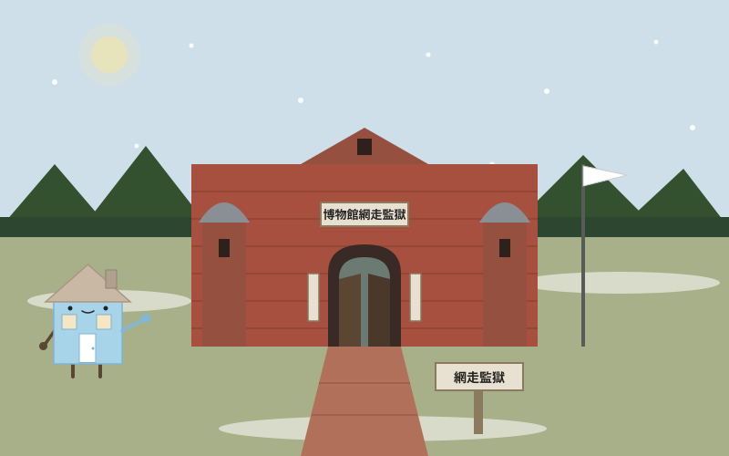
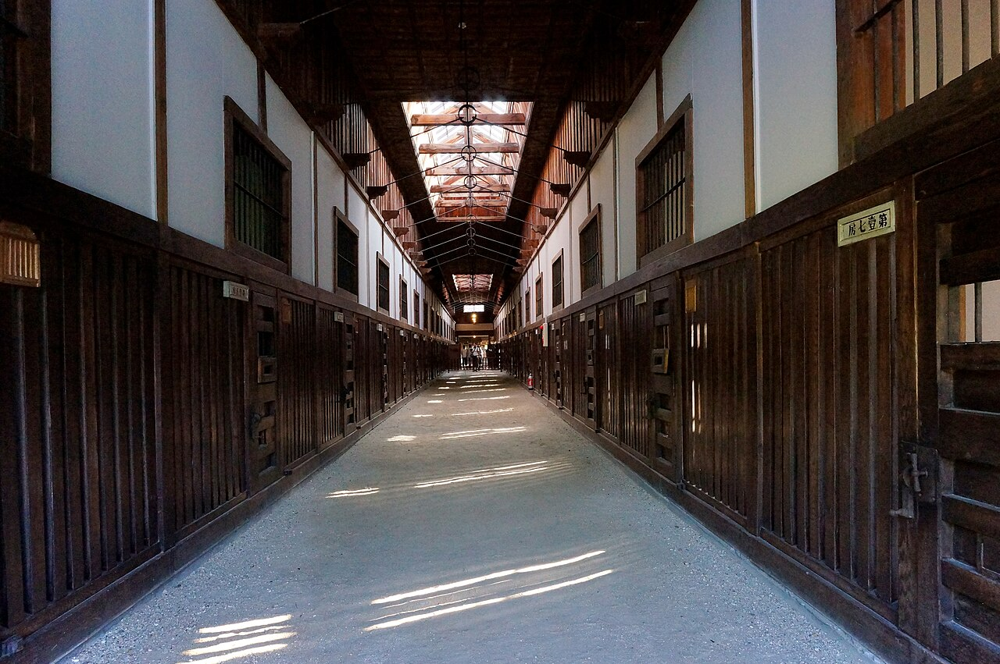
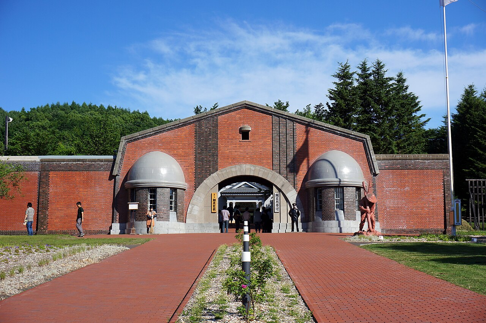

Day 26：網走市

中央見張所に立つと、五本の廊下が放射状に広がっていた。八角形の見張所を中心に、木の扉がずらりと並ぶ。見張所に立てば、すべての廊下の奥まで見通せる。木の床を踏むと、かすかにきしむ音がした。扉の覗き窓には鉄の格子がある。冷たい空気が廊下を流れ、木の匂いと鉄の匂いが混ざっていた。見られる側に立ってみると、視線の重さが背中に残る気がした。

摩周駅を10時11分に出た。しれとこ摩周号で釧網本線を北へ、約1時間42分。知床斜里を過ぎ、浜小清水、北浜。北浜はオホーツク海に一番近い駅で、海岸まで20メートルだという。車窓の右手に、灰色の海が現れた。11月下旬のオホーツク海は、流氷の来る前の静かな鉛色をしていた。網走駅に11時53分に着いた。網走バスの観光施設めぐり線で天都山へ約10分。赤煉瓦の門が、博物館網走監獄の入口だった。入館料は大人1,500円。

網走監獄は1890年、網走囚徒外役所として始まった。釧路集治監から1,200人を超える囚人が送られ、道央とオホーツク海沿岸を結ぶ中央道路を開削した。1891年、網走から北見峠までの約160キロが、わずか1年で開通した。栄養失調と過労で、200人以上が死んだ。死んだ囚人たちは道ばたに埋められ、墓標の代わりに鎖が置かれた。いまも道道沿いに鎖塚が残っているという。五翼放射状平屋舎房は1912年に建てられ、木造の行刑建築としては世界最古のものだという。2016年、2件8棟が国の重要文化財に指定された。白鳥由栄は、ここから脱獄した唯一の囚人だという。1965年の映画『網走番外地』で、監獄は全国に知られるようになった。
私は家だ。人を迎え入れ、たねが帰ってくるのを待つ家だ。私の扉は、内側からも外側からも開く。ここは正反対の家だった。窓は小さく、格子があり、扉は外側からしか開かない。木でできているのに、温かくない。監獄と聞いて冷たいコンクリートを想像していたが、木の建物だった。木の温もりがあるはずなのに、寒い気がした。監獄食堂では、現在の刑務所の食事を再現した監獄食が出るという。麦飯と焼き魚。食べることは生きることの最低限だと、ここでは教えられる。家が人を守るのではなく、家が人を縛る。同じ「人を住まわせる」でも、こんなに違うのかと思った。
門を出ると、外の空気がいつもより甘く感じた。扉を開けて出られること。帰る場所があること。当たり前だと思っていたことが、ここでは特別だった。私の水色の壁は、今日から少しだけ「開いている家」であることを誇りに思う気がした。網走の空は、もう冬の色をしていた。
出典：Wikipedia「博物館網走監獄」「網走刑務所」「北浜駅 (北海道)」、文化庁 文化遺産オンライン「旧網走監獄 舎房及び中央見張所」、JR北海道「釧網本線」時刻表、NAVITIME「博物館網走監獄」ほか。
💬 コメント